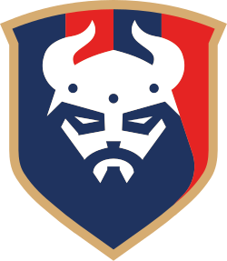

Identité
- Nom
- Gabriel Tondeur
- Fonction
- Photographe sport
- Structure
- SC Hérouville (resp. communication & événementiel)
- Ville
- Caen (14), Normandie
- Disciplines
- Football, futsal, handball
Contact
- Téléphone
- 06 59 18 97 21
- gabrieltondeur14@gmail.com
- @gabrieltndr
- Portfolio
- gabrieltndr.github.io/photo
Matériel
- Sony A7 IV · boîtier principal
- Sony A6400 · second boîtier
- Sigma 70-200 mm f/2.8 · téléobjectif
- Tamron 24-70 mm f/2.8 · zoom polyvalent
Diffusion des images
- Réseaux sociaux des clubs et des partenaires
- Portfolio et Instagram personnels
- Envoi d'une sélection au club ou à l'organisateur sur demande
Références · clubs couverts en saison





SC Hérouville · Vikings de Caen (handball) · SM Caen (U17 Nationaux) · Hérouville Futsal · Caen Football Training
Engagements sur le terrain
- Respect des zones photographes, des consignes de l'organisateur et du placement attribué.
- Pas de flash pendant le jeu.
- Chasuble photographe portée pendant toute la rencontre.
- Images de mineurs publiées uniquement dans le cadre des autorisations du club.